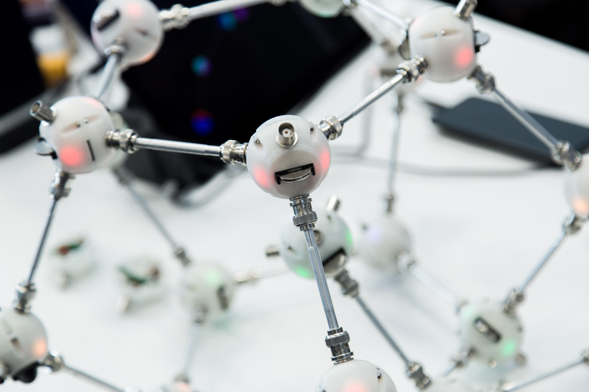
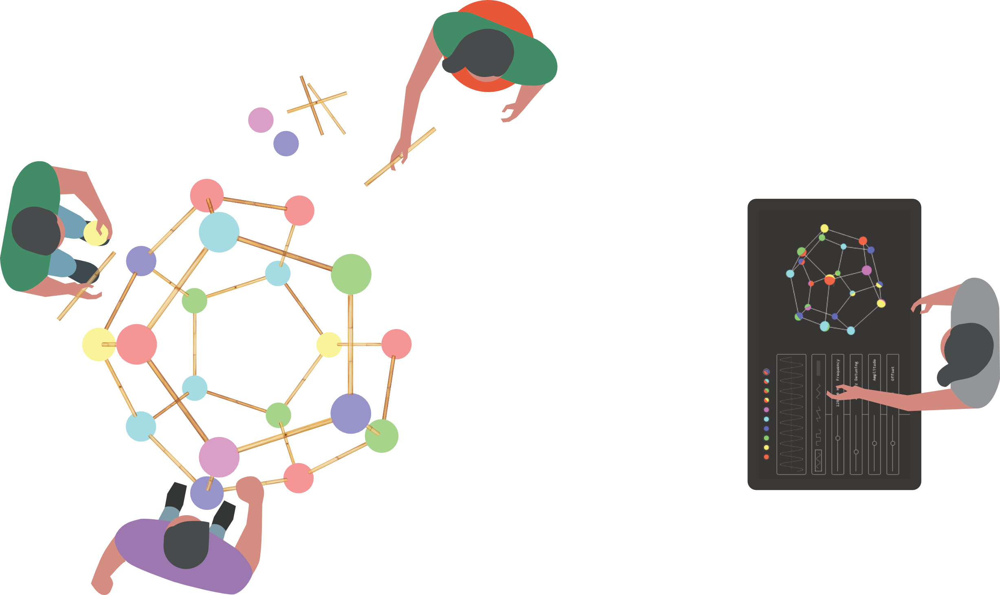
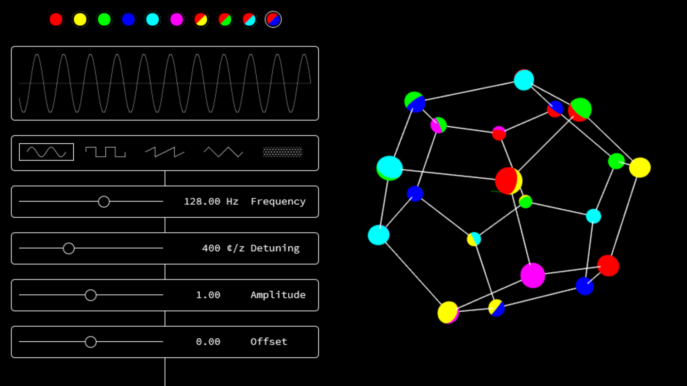

SAN: Coco Nodes & Bamboo Edges
Table of Contents
1 Introduction
The Self Aware Network (SAN) is a kit for assembling architectural structures that are aware of themselves. A structure is comprised of a network. Nodes communicate and send information to the brain, a computer which is able to understand what has been built. Structures communicate with the environment visually and auditory.
2 Objectives of this document
- Find a way to scale up SAN, using coconuts and bamboo canes as elements
- Decide on components.
- Design PCB for controller.
- Design PCB for IR transceiver.
- Create a manufacturing ready board layouts.
- Optimize price and manufacturing time.
3 SAN desktop system
The SAN desktop system is fully functional, asides from a bunch of bugs. Nodes are 3D printed spheres with a diameter of 50 mm. Edges have a length of 100 mm. Nodes and edges are connected using BNC connectors. Signals are transmitted via wires to the network’s brain using a two layer protocol based on MultiTrans.

Figure 1: Desktop system at Maker Faire Berlin 2019, photo © Tobi Giessen
4 SAN life-size system
The SAN life-size system is under development. It is not functional. Only part of it has been prototyped. Nodes are coconuts of about 150 mm diameter, and edges are bamboo canes of 500 mm in length. Nodes identify themselves to their neighbors using IR traveling through the bamboo canes. Nodes send information to the brain wirelessly. No complex protocol is required.

Figure 2: Porposal for the deTour 2019 art festival Hong Kong
5 Brain
The brain is the central computer that visualizes the network and that allows controlling how nodes in the network generate and modulate sound.

Figure 3: Control panel of brain
6 Bamboo edge
| Component | QTY |
|---|---|
| Bambo pole | 1 |
| Light pipe, acrylics ⌀ 10 mm | 1 |
| Quick-connect, female, brass | 2 |
Preparation:
- Perforate all segments, so that light can pass through pole.
- Prepare ends of pole for inside and outside diameter matching quick-connect.
- Mount quick-connects onto ends and secure them with epoxy.
Figure 4: Prototype
7 Coco node
| Component | QTY |
|---|---|
| Coconut shell | 1 |
| Quick-connect, male, brass | 4 |
| IR transceiver | 4 |
| Cable tie | 4 |
| Battery | 1 |
| Camera | 1 |
| Microphone | 1 |
| Speaker | 1 |
| Controller | 1 |
Preparation:
- Cut coconut shell in half.
- Consume coconut water and flesh.
- Drill holes for components and for cable ties.
- Mount quick-connects onto shell and secure them with epoxy.
- Prepare controllers and IR transceivers.
- Mount IR transceivers in quick-connects.
- Mount camera, speaker, microphone onto shell.
- Mount controller and battery into shell and solder connections.
Requirements for controller:
- Transmit ID and port numbers to neighboring nodes via IR transceivers.
- Receive IDs and port numbers from neighboring nodes via IR transceivers.
- Send information who neighbors who to brain, e.g. via WiFi.
- Low priority: Transmit audio and camera stream to brain.
- Low priority: Receive audio stream from brain and output it.
Camera, speaker, and microphone: low priority
Controller could be: Raspberry Pi 0 + Arduino Pro Mini

Figure 5: Non-functional prototype
7.1 IR transceiver
| Component | QTY |
|---|---|
| Board, ⌀ 25.7 mm | 1 |
| Capacitor | 1 |
| Resistor | 1 |
| IR-LED | 1 |
| Sensor | 1 |
| Connector | 1 |
Figure 6: Sketch